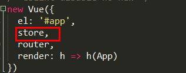

原文出处:本文由博客园博主遇你温柔如初提供。
原文连接:https://www.cnblogs.com/web-aqin/p/10796845.html
原文连接:https://www.cnblogs.com/web-aqin/p/10796845.html
1 <nav>
2 <!-- 导航栏 -->
3 <div class="indexNavOut">
4 <div class="indexNav">
5 <ul class="navLi">
6 <li @click="checkNav()" style="width: 130px;"><router-link to="/home">了解海华教育(视频)</router-link><!--<a href="#">了解海华教育(视频)</a>--></li>
7 <li @click="checkNav()" v-bind:class="{'active':Index=='#/home','active2':Index=='#/'}">
8 <router-link to="/home">首页</router-link>
9 </li>
10 <li @click="checkNav()" v-bind:class="{'active':Index=='#/synopsis'}"><router-link to="/synopsis">学校简介</router-link>
11 </li>
12 <li @click="checkNav()" v-bind:class="{'active':Index=='#/major'}"><router-link to="/major">专业介绍</router-link>
13 </li>
14 <li @click="checkNav()" v-bind:class="{'active':Index=='#/campus'}"><router-link to="/campus">校园风采</router-link>
15 </li>
16 <li @click="checkNav()" v-bind:class="{'active':Index=='#/news'}"><router-link to="/news">新闻资讯</router-link>
17 </li>
18 <li @click="checkNav()" v-bind:class="{'active':Index=='#/enrollment'}"><router-link to="/enrollment">招生信息</router-link>
19 </li>
20 <li @click="checkNav()" v-bind:class="{'active':Index=='#/employment'}"><router-link to="/employment">就业中心</router-link>
21 </li>
22 <li @click="checkNav()" v-bind:class="{'active':Index=='#/enlist'}"><router-link to="/enlist">在线报名</router-link>
23 </li>
24 <li @click="checkNav()" v-bind:class="{'active':Index=='#/contact'}"><router-link to="/contact">联系我们</router-link>
25 </li>
26 </ul>
27 </div>
28 </div>
29 </nav>css:
1 /* 导航栏 */
2 .indexNavOut{
3 background-color: #486B8A;
4 height: 60px;
5 }
6 .indexNav{
7 width: 80%;
8 margin: 0 auto;
9 }
10 .navLi{
11 display: flex;
12
13 }
14 .navLi li:nth-child(1){
15 flex: 1.8;
16 }
17 .navLi li{
18 flex: 1;
19 }
20 .navLi li a{
21 text-decoration: none;
22 color: #fff;
23 font-size: 16px;
24 padding-bottom: 17px;
25 }
26
27 .indexNav .icon{
28 width: 230px;
29 margin-top: 10px;
30 }
31 .indexNav .icon img{
32 width: 100%;
33 }
34
35 .navLi li {
36 height: 60px;
37 line-height: 60px;
38 position: relative;
39 }
40 .navLi li.active a{
41 border-bottom: 3px solid #E96463;
42
43 }
44 .navLi li.active2 a{
45 border-bottom: 3px solid #E96463;
46
47 }
48 .navLi li:last-child:after{
49 border-right: none;
50 }
51 .navLi li .line{
52 width: 20px;
53 height: 3px;
54 background: #E96463;
55 border: none;
56 position: absolute;
57 /*top: -14px;*/
58 /*right: -32px;*/
59 left: 50px;
60 top: 45px;
61 z-index: 100;
62 }js:

main.js代码：


1 import Vuex from 'vuex'
2 Vue.use(Vuex);
3 const store = new Vuex.Store({
4 state: {
5 majorDetail: false,
6 Index: document.location.hash,//导航条跳转路由样式控制
7 },
8 mutations: {
9 //控制专业介绍详情显示隐藏
10 updatemajorDetail(state, majorDetail) {
11 state.majorDetail = majorDetail;
12 },
13 updateIndex(state, Index) {
14 state.Index = Index;
15 }
16 }
17 });
效果图：

现在在这个页面里点击了解更多的时候跳转到新闻资讯页面，然后然后state里的值，然后改变当前的url以及导航选中新闻资讯。